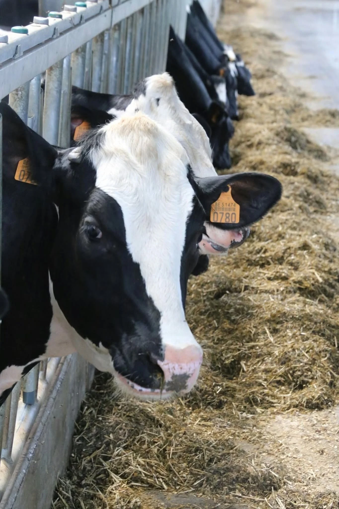

Publication relayée par le PCF 79
Les députés communistes demandent un vote du Parlement sur l’accord UE-Mercosur
Date de mise à jour indiquée par Facebook · 14 février 2025
Texte de la publication · Les députés communistes
[Communiqué] L’accord UE-MERCOSUR doit être soumis au Parlement français !
A l’occasion du débat sur la déclaration de la Commission européenne qui s’est tenu ce matin au Parlement européen, nous rappelons notre exigence que l’accord UE-MERCOSUR soit soumis au Parlement français et nous appelons à le rejeter.
Les négociations secrètes de cet accord, l’impossibilité d’accès aux échanges entre les parties et aux documents clés, sont à l’opposé des exigences démocratiques.
Cet accord dangereux, loin de construire des coopérations, est totalement dépassé au regard des grands défis humains et environnementaux du 21e siècle. Il conduirait à l’abaissement des droits et des normes en participant de la concurrence capitaliste généralisée entre les systèmes productifs et les travailleur·ses du monde entier.
Il menace la souveraineté alimentaire de la France, le climat et la santé de nos concitoyennes et concitoyens.
Il placerait les agriculteur·rices européen·nes dans des situations de concurrence déloyale, et annihilerait la possibilité de travailler à un nouveau pacte agricole et une meilleure rémunération des paysans si l’on favorise dans le même temps l’import de denrées produites à moindre coûts social et environnemental. Cet accord est en totale contradiction avec le développement d’une agriculture durable et place l’agriculture comme une variable d’ajustement pour développer d’autres marchés comme l’automobile.
Il est nocif pour les sols et la biodiversité au regard du système de monoculture intensif qu’il promeut dans les pays du MERCOSUR et accélèrera le réchauffement climatique en augmentant massivement les émissions de gaz à effets de serre.
Il menace la santé publique avec l’utilisation de produits phytosanitaires employés dans les pays du MERCOSUR qui sont interdits en Europe.
Nous appelons à un tout autre type de coopérations avec les pays et les peuples du MERCOSUR pour améliorer la vie de tous et toutes ici et là-bas.
Paris, le 13 février 2025
André Chassaigne, Député du Puy de Dôme Président du groupe GDR
Cécile Cukierman, Sénatrice de la Loire Présidente du groupe CRCE-K
Fabien Roussel, Secrétaire national du PCF

Sources
Les députés communistes · publication relayée par le PCF 79 · bibliothèque Facebook · AR-0002-FB-01194
À lire aussi · Le PCF réaffirme son opposition à l’accord avec le Mercosur